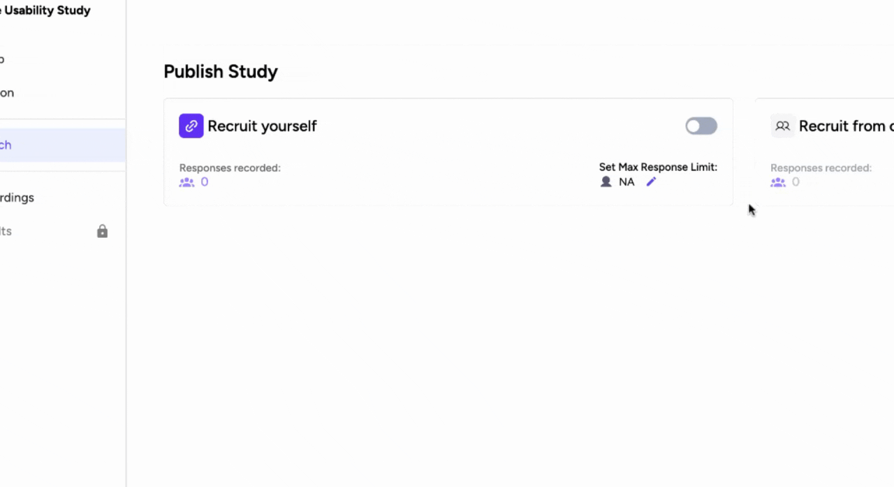
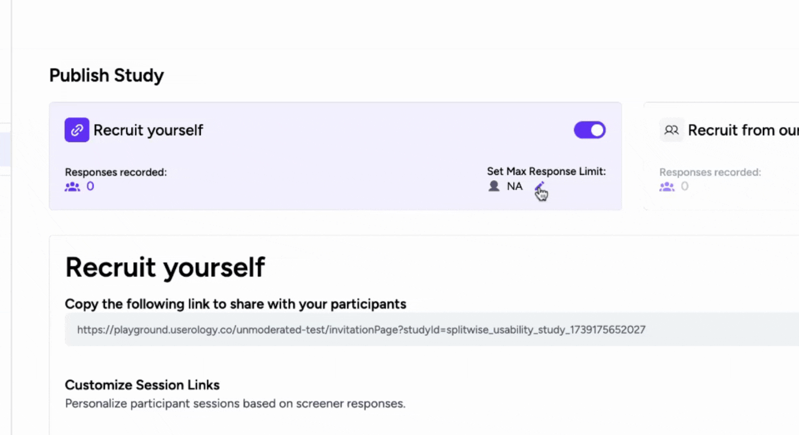
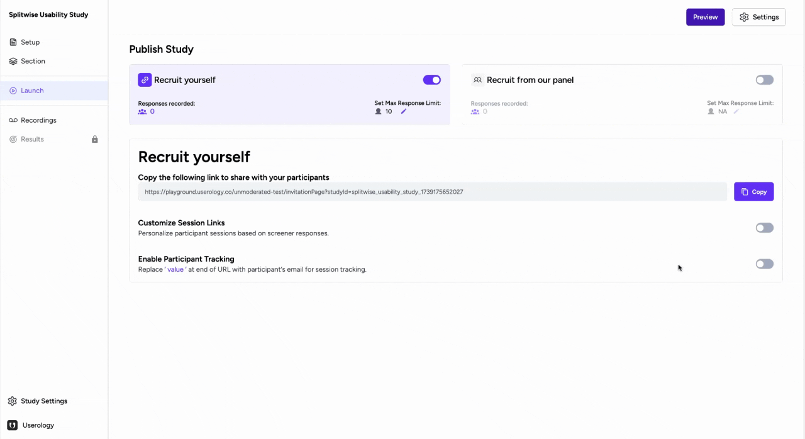
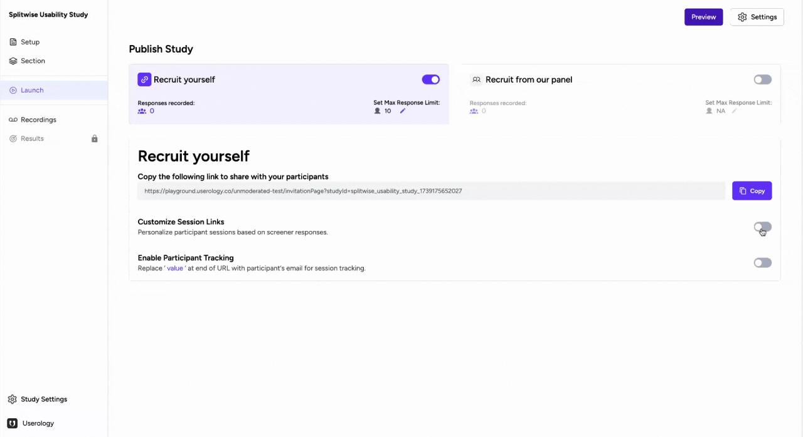

This guide covers functionality and customization to recruit participants yourself. After drafting and previewing your study, decide between two methods for launching:
- Recruit Yourself: Manage participant recruitment independently.
- Userology Panel: Access Userology's panel of over 10 million+ participants.
Tip: You can enable both the methods in same study as well.
Steps in Recruiting participants yourself
1. Enable Recruit Yourself
Toggle Recruit Yourself to start managing your own participant recruitment.

2. Set a Maximum Response Limit
Define a maximum response limit to control the number of participants. Once the limit is reached, the study will pause automatically. This is optional, else the study will not pause until you do it manually on the platform.

3. Share the Study Link
Copy the study link from the platform and share it with your participants. You can send this to your participants on email, internal communication channels, embed in the product.

Personalization when Recruiting your own participants
1. Personalize Participant Details
Customize the session link to pre-fill participant details for a tailored experience. You can demographic detail, screener responses, or any relevant detail that AI moderator may utilise about participants during moderation.
You can also put conditional questions in discussion guide based on information provided when personalizing.

This unique link informs the AI about the participant's details, enabling personalized questions. Generate as many personalized links as needed for your participants.
2. Append Email to the Link for tracking
Add the participant's email to the end of the link when using bulk email send tools like Mailchimp. This allows Userology to capture their email automatically and display it in the recordings for accurate tracking - beneficial specifically during incentive processing.

This is how you can launch a study in Userology, set a response limit, customize session links, and track participant emails. Whether you're recruiting participants yourself or using Userology's panel, these steps ensure a smooth and personalized study experience.
Need help? Email us at support@userology.co